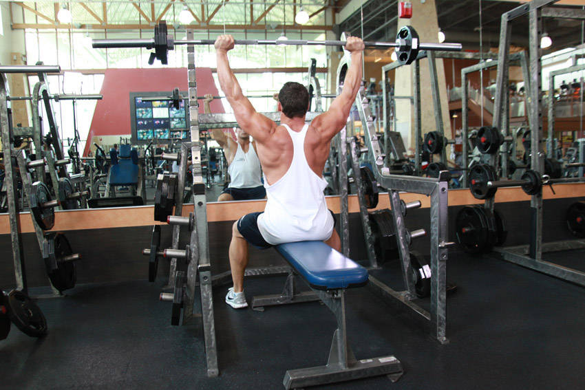

- Sit on a Military Press Bench with a bar behind your head and either have a spotter give you the bar (better on the rotator cuff this way) or pick it up yourself carefully with a pronated grip (palms facing forward). Tip: Your grip should be wider than shoulder width and it should create a 90-degree angle between the forearm and the upper arm as the barbell goes down.
- Once you pick up the barbell with the correct grip length, lift the bar up over your head by locking your arms. Hold at about shoulder level and slightly in front of your head. This is your starting position.
- Lower the bar down to the collarbone slowly as you inhale.
- Lift the bar back up to the starting position as you exhale.
- Repeat for the recommended amount of repetitions.
This exercise appears in Programmd training programs. Take the quiz to find one for your gym.
Find your program